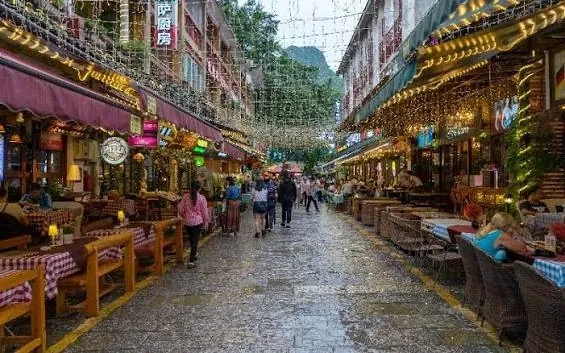
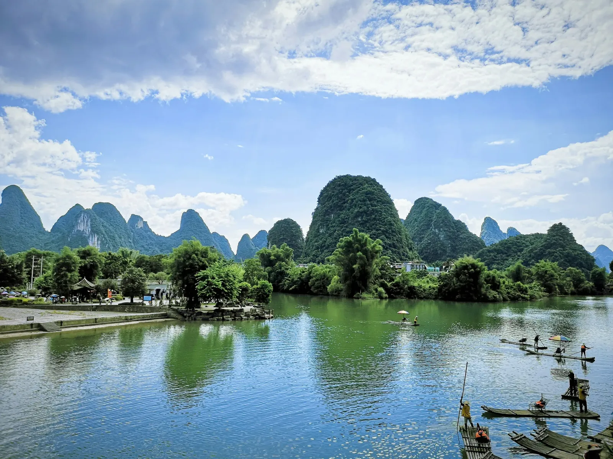
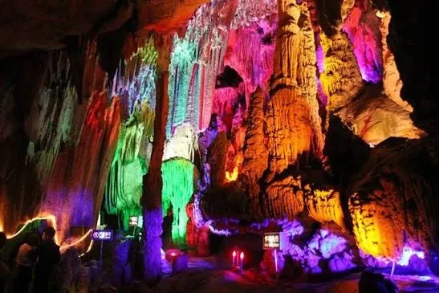
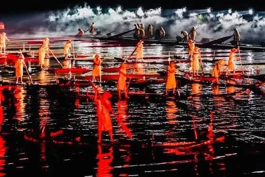

Guilin & Yangshuo
A perfect destination for nature, mountains and river experiences.


About Guilin & Yangshuo
Guilin and Yangshuo hold the classic postcard image of China: limestone karst peaks rising out of the Li River, fishermen on bamboo rafts, and rice terraces climbing the hillsides. It's one of the country's most relaxing regions to slow down in.
A Li River cruise from Guilin to Yangshuo is the centrepiece of most itineraries, followed by cycling or rafting along the Yulong River. We can build this in as a standalone leg or as a scenic add-on to a Guangzhou or Shenzhen business trip.
Major attractions in Guilin & Yangshuo
Every must-see highlight and hidden gem our itineraries are built around
Li River Cruise
A slow four-hour cruise past the karst scenery that inspired the 20-yuan banknote.
Yangshuo West Street
A pedestrian street of cafes, bars and shops beneath the karst peaks.

Yulong River
Quieter than the Li River, popular for bamboo rafting and cycling.

Longji Rice Terraces
Dramatic terraced hillsides carved by the Zhuang and Yao communities.

Reed Flute Cave
A cavern of illuminated stalactites and stalagmites near Guilin.

Impression Liu Sanjie Show
An outdoor night performance staged on the river itself, directed by Zhang Yimou.

Karst mountain scenery
The limestone peaks that give Guilin and Yangshuo their iconic skyline.
Guilin Two Rivers and Four Lakes
Scenic night cruise linking Guilin's rivers and lakes.
Elephant Trunk Hill
Guilin's most photographed karst formation, shaped like a drinking elephant.
Xingping Ancient Town
Riverside village said to be the view on the 20-yuan note.
20 Yuan Banknote viewpoint
The exact karst-and-river scene printed on China's 20-yuan bill.
Essential Details
Key information for planning your Guilin & Yangshuo visit
Best Time to Visit
Apr – Oct offers the most comfortable conditions for sightseeing in Guilin & Yangshuo.
Typical Weather
Average temperatures of 18-30°C during summer avg. — pack accordingly for the season you travel.
Getting There
Guilin Liangjiang International Airport has direct connections from major Chinese hubs, or arrive by bullet train from Guangzhou or Shenzhen in under 3 hours.
Language Support
English-speaking Chinese staff and Chinese-speaking Indian/Malayali guides can be arranged for Guilin & Yangshuo.
Food Arrangements
Indian, Kerala, Halal, Arabic and local Chinese food options can be coordinated throughout your stay.
Local Tip
Base yourself in Yangshuo rather than Guilin city for easier access to the countryside.